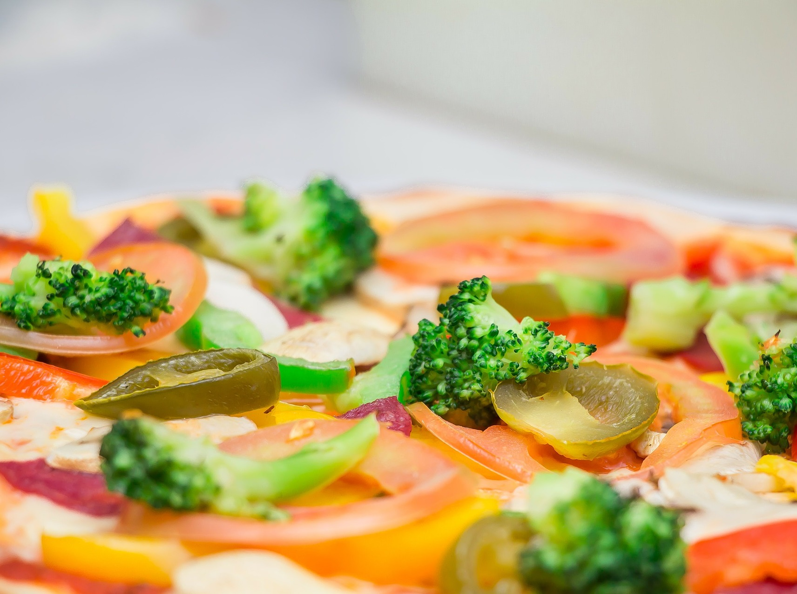

Self-Service
Trabalhamos com Self-Service aos finais de semana e pratos diversos nos demais dias.
Chopp, açaí, salgados, pizzas são algumas das opções disponíveis


Trabalhamos com Self-Service aos finais de semana e pratos diversos nos demais dias.
Chopp, açaí, salgados, pizzas são algumas das opções disponíveis